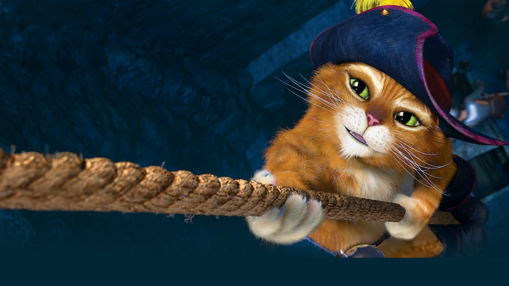

Я кот в сапогах!
Мультик про меня!Моё фото

Я в детстве
Я взрослый
За эти годы меня как только не называли. Диабло като. Пушистый Дон Жуан, Чупакабра, Игривый Дваждылюб и Рыжий Убийца. Но для большинства я Кот в сапогах. Я вне закона. Ну что тут скажешь? Я был тот еще проказник. Беглец от правосудия. Ни секунды на месте. Я искал способ восстановить свое честное имя. И одной судьбоносной ночью мне выпал шанс...
У меня есть
- Сапоги
- Шляпа
- Шпага
Мне надо
- Сражаться!
- Хорошо питаться!
- Быть как Робин Гуд!